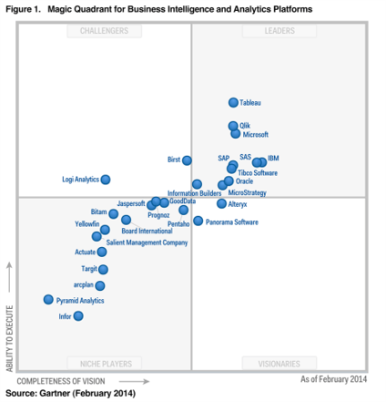
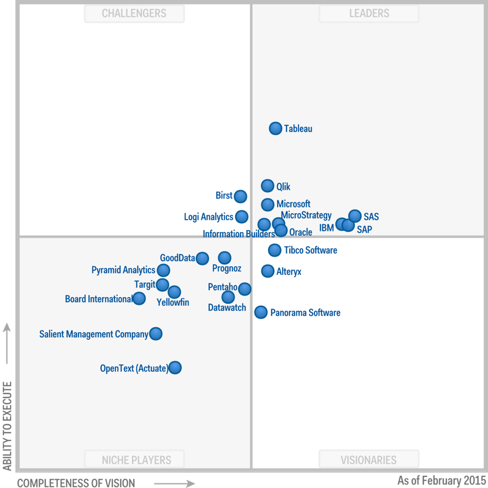
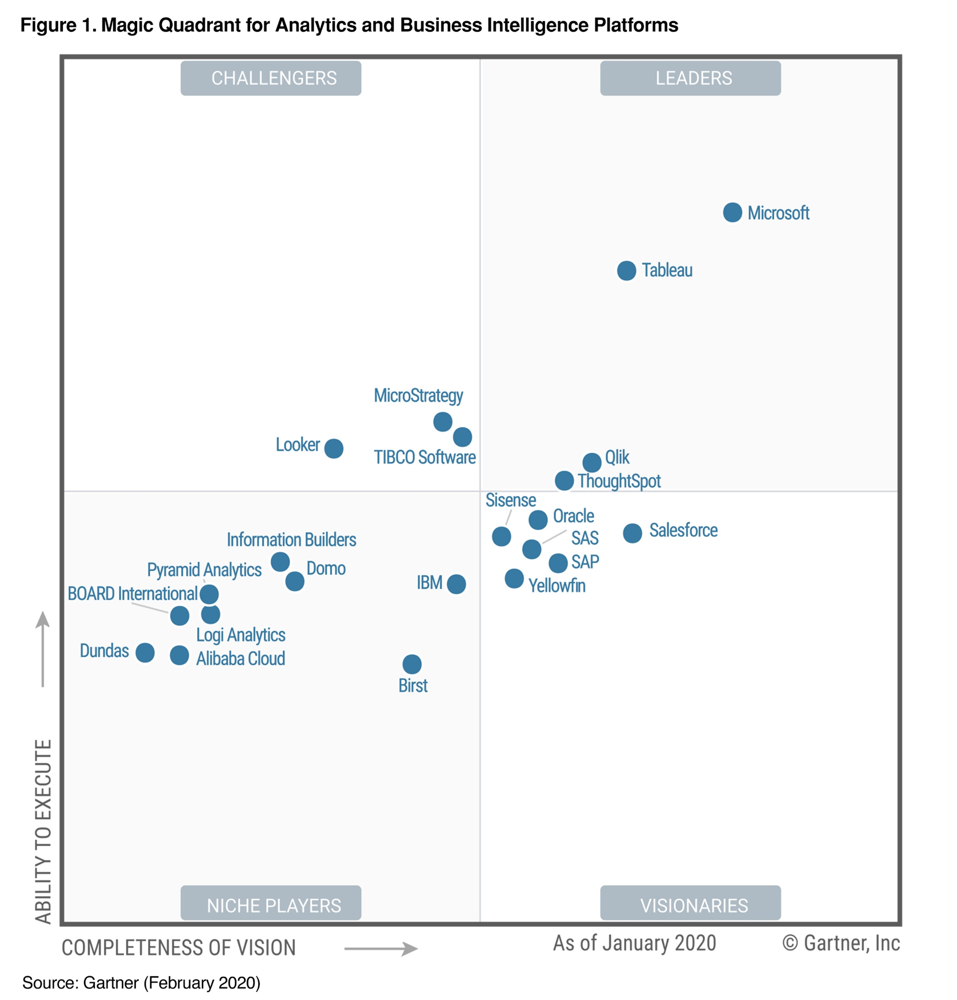
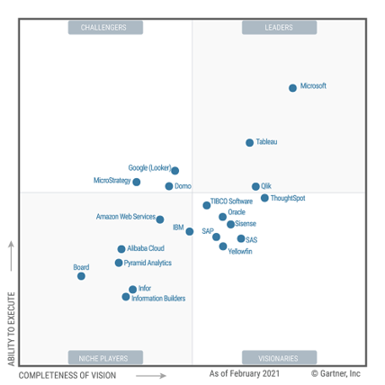

1 Business Intelligence#
1.1 Definition and objectives#
BI = Business Intelligence
It is a set of tools and methods allowing the provision of relevant and intelligible information to company managers
They can then have an overview of the health of the company and their environment, allowing them to make strategic decisions based on the situation
The idea is to enable better decision making through the analysis of company data –> Data is valuable!
- The problem is that this data is often scattered in files, or in different business applications (CRM, ERP, web, etc.)
Often, these applications offer reporting solutions
But these reports only concern one application at a time
We then only have a vision of the data that is compartmentalized
Business Intelligence consists in cleaning, consolidating and gathering all these data in a data warehouse, in order to allow an easier restitution of the latter
The reports will then be based on the data warehouse, where all the data is cross-referenced, and not on isolated data sources
The concept of a data warehouse was popularized in the 1980s by Ralph Kimball and Bill Inmon
1.2 The beginnings of BI#
- The data becomes analyzable, in particular through decision-making tools developed by different editors
Business Objects
Actuate
Crystal Reports
MicroStrategy
This is the beginning of Business Intelligence –> We talk about BI 1.0
But with the advent of the Internet and the multiplication of data, users want to access more and more quickly to data whose volume is constantly growing
The notion of performance then becomes an issue for BI
In the 1990s, new tools appeared: Informatica, Cognos, Information Builders, Hyperion, etc.
With the gradual democratization of BI, more and more end-users are using reporting tools, and very often the data ends up extracted in Excel files
This gradually leads to a multiplication of the vision of data within the same company, which is clearly problematic because each user may have their own “truth”.
A new challenge emerges: to allow a single vision of the data, a single truth
- It is in this perspective that in the 2000s new platforms appear, offering more features in a single tool, and this for a lower cost
SAP
Oracle
Microsoft
IBM
SAS
We then speak of enterprise BI: BI 2.0
1.3 Towards Self-BI#
For several years now, a new form of Business Intelligence has been emerging: Self-BI (or Self-Service BI) –> We talk about BI 3.0
- BI tools are much more user-friendly, within reach of everyone
Advanced technical knowledge is no longer a necessity to do BI
These user-friendly tools allow you to do all sorts of things that were previously reserved for a category of people with a real technical background
End users are often referred to as « Power Users »
- With Self-BI, end users (business side) are now able to, among other things:
Retrieve data from various sources
Transform data to their liking
Create a powerful data model
Design new reports and dashboards
This greater independence for users also relieves IT teams, which are composed of technical profiles, from having to carry out uninteresting or low value-added tasks
1.4 Traditional BI / Self-BI Comparison#
Traditional BI |
Self-Service BI |
End users submit requests to IT teams to create new reports |
End users can generate new reports themselves |
The IT department sets up a whole process of extraction, transformation and loading of data in a datawarehouse |
End-users integrate and transform the data they are interested in through an intuitive interface |
The IT department creates the data model |
End users create the data model themselves |
Paginated, static, non-interacting reports, intended to be printed or exported in a specific format |
Highly interactive reports, dynamic filters |
End users submit requests to IT teams to create new reports |
End users can generate new reports themselves |
The IT department sets up a whole process of extraction, transformation and loading of data in a datawarehouse |
End-users integrate and transform the data they are interested in through an intuitive interface |
The IT department creates the data model |
End users create the data model themselves |
Paginated, static, non-interacting reports, intended to be printed or exported in a specific format |
Highly interactive reports, dynamic filters |
1.5 Traditional BI or Self-BI?#
1.5.1 Using Power BI#
It is important to understand that Power BI can be used in two main ways: as a full BI tool, or as a dataviz tool
In the first case, we use all the power of Power BI to take care of everything: data integration and transformation, model creation, report design… We do everything from A to Z in Power BI
In the second case, Power BI can be based on a classic BI solution with a datawarehouse (or even a cube) and connect to it to display data through dynamic reports
1.5.2 How to decide?#
- Since Self-BI is still quite young, some questions are frequently asked, such as:
“Should I invest in a traditional BI solution or in a self-service BI tool?
- There is no absolute rule!
Everything will depend on the needs, the context, the constraints, etc.
In addition, there are many hybrid projects today that mix traditional BI tools with Self-BI tools
1.5.3 Data integration#
Regarding data integration, Power Query is a powerful “mini” ETL within Power BI
Although Power Query is quite complete, depending on the project, it is sometimes preferable to opt for a “traditional” data integration combining a real ETL and a data warehouse
Indeed, an ETL often offers more flexibility in data processing, but requires additional technical skills compared to Power Query
1.5.4 Cube or Power BI?#
As previously mentioned, Power BI is based on the “Vertipaq” engine, which relies on a powerful “in-memory” technology
This is the same technology that is used by the tabular SSAS cubes
Thus, you can connect Excel to a Power BI dataset, as if it were a cube, to create pivot tables!
- This similarity leads many companies to ask the question:
“Should we abandon our cubes, and migrate our data directly into Power BI instead?”
This is a real current topic, and the recent evolutions of Power BI, pushes in this direction: using Power BI to cover the “analysis” aspect instead of the “traditional” cubes
1.5.5 Paged Reports VS Interactive Reports#
- As far as the “reporting” part is concerned, you should know that Power BI manages two types of reports
The classic “interactive” reports
Paginated reports
- Paged reports are specific reports designed to fit on one page (printed, PDF, etc.), usually for “mass” distribution purposes
You can really adjust them to the pixel (pixel perfect)
They address certain needs that cannot be handled by traditional Power BI reports
Although associated with “traditional BI”, paginated reports are still very present and in demand in companies
- On the Microsoft side, historically it was SQL Server Reporting Services (SSRS) that provided this need
This is still the case!
- But as of 2019, these reports are now also managed by Power BI
Another reason for some companies to migrate to Power BI!
- Overall, the paginated reports are interesting when :
The report must be exported or printed
The data is displayed in a table and that it can be spread over several consecutive pages
A dedicated tool allows you to develop them: Power BI Report Builder
A link to summarize the situations in which paginated reports can be useful: https://docs.microsoft.com/en-us/power-bi/guidance/report-paginated-or-power-bi
1.6 The BI market#
1.6.1 Gartner Magic Quadrant#
To visualize the positioning of Microsoft in the Business Intelligence landscape, and more precisely on the “analytics” aspects, we can refer to the “Magic Quadrant” of Gartner
This is an annual analysis of the positioning and performance of the various market players, in the form of a scatter plot
- The “Magic Quadrant” allows us to judge the market players according to two main criteria:
Completeness of Vision
Ability to Execute
- Completeness of vision:
Reflects the vendor’s innovation, whether it is driving or following the market, and whether the vendor’s view of market development matches Gartner’s perspective
- Ability to execute:
Summarizes factors such as:
Financial viability of the supplier
Market responsiveness
Product development
Sales channels
The clientele
- The different actors are separated into 4 main groups:
Leaders: Following their current vision and well positioned for the future
Visionaries: Know where the future of the market lies and how the rules will change but are not yet able to make it happen
Challengers: Good at execution, even in a large segment, but have little vision of where the market is going
Niche Players: Focus on a small but successful segment
There are several Magic Quadrants, and we will focus on the one called “Analytics and Business Intelligence platforms”.
Gartner 2014:
{kind=link}
Gartner 2015:
{kind=link}
Gartner 2020:
{kind=link}
Gartner 2021:
{kind=link}
- As can be seen, a trio of “leaders” has been in place for a while now, with Microsoft in pole position
In fact, 2021 is the 14thème year in a row that Microsoft is considered a leader
The emergence of Power BI has allowed Microsoft to increase its lead over its main competitors, and the regular updates of the product suggest that this is not going to stop
1.6.2 Other benchmarks#
Forrester
KPMG data visualization benchmark